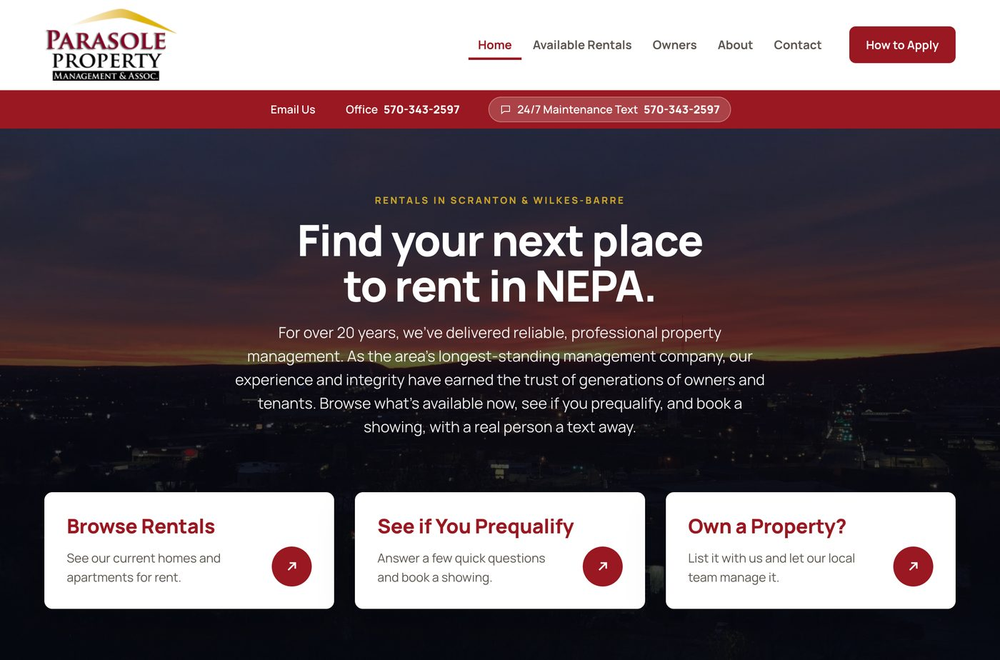
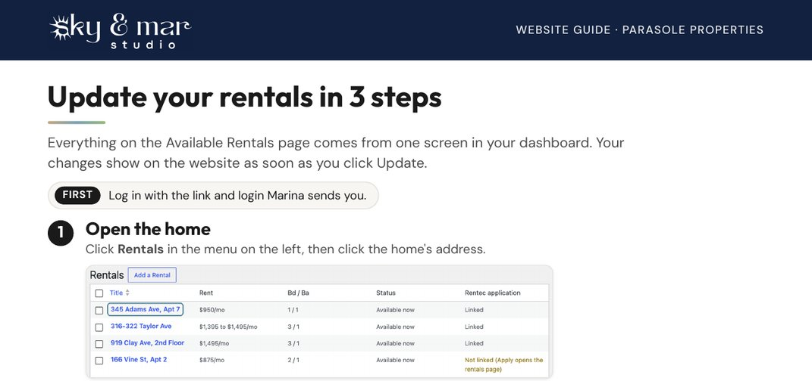

Case study
Parasole Properties
A rental website that does the first step of a showing for the office.
- Client
- Parasole Property Management, Scranton, PA
- Scope
- Six-page redesign, plus rental listings the office runs itself
- Launched
- November 2026
- Live at
- parasoleproperties.com
The problem
Parasole has managed homes and apartments around Scranton and Wilkes-Barre for more than 20 years. Before anyone tours a home, the office needs to know two things: can this renter afford it, and are they ready to move?
That check used to happen by email. A renter filled out a form, then waited a day or two for the office to write back. The old website could show a home, but it could not do any of that work.
A renter finds out if a home fits in a few questions. The office gets the request with every answer attached.
The office still schedules every showing. It just starts with the answers instead of a first email.
Four decisions, and why
Each one answers the same question: what does the office keep doing by hand that the site could do first?
Renters first, owners one tap away
The homepage opens on three doors: browse rentals, see if you prequalify, or hand over a property. Renters and owners want different things, so neither has to read past the other's pitch.
A private check, not a posted bar
The prequalification looks at income, pets, move-in timing and household size, and tells a renter whether the home fits and why. It never shows a dollar requirement, and the rule lives in the site's settings, so changing it doesn't mean changing code.
Requests arrive complete
A renter who fits asks for a showing right there. The office gets an email with every answer, and a copy is saved in the dashboard, so one lost email never means one lost renter.
Apply goes where the office already works
Each home's Apply button opens that home's own application in the property management software the office already uses. No second system to keep in sync, and no sensitive applicant details sitting on the website.
What's on the site
Six pages: home, available rentals, how to apply, owners, about, and contact. Every rental gets its own page with photos, the rent, and the prequalification built in.

- 1How to Apply, always in reach Same corner, every page. Nobody has to hunt for the next step.
- 2Maintenance from any page Email, call, or text the 24/7 maintenance line. On a phone, all three fit on one row.
- 3Who it's for, before you scroll Rentals, the region, and a real person a text away.
- 4Three doors Browse, prequalify, or list a property. Each one goes straight to its page.
Built with tools any web developer already knows:
Built so the office runs it
Rentals go stale every time a home rents, so keeping them current had to be easy. Each home is one screen in the dashboard, with a short note under every box. Setting a home to Rented takes it off the list.
Nobody has to call me to change a rent. The office got an illustrated guide for that screen, and another for showing requests.

Is your office answering the same questions all day?
I build sites that answer them first, so the calls you get are the ones worth taking.